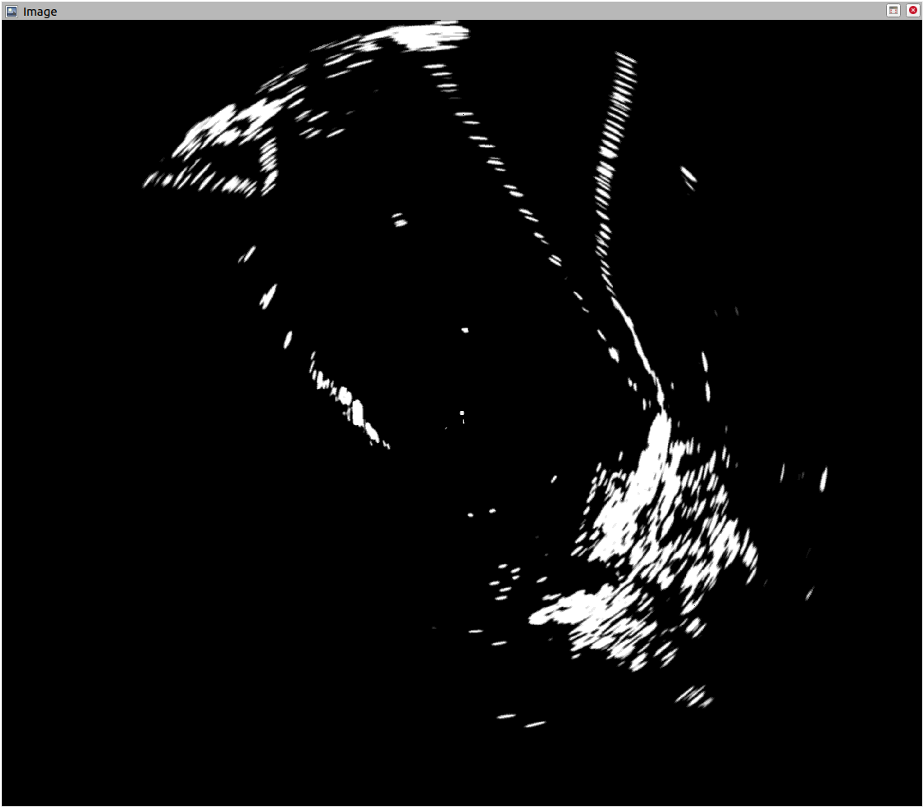

극좌표 원시 데이터만 제공하는 해상 레이더 드라이버를 확장하여, Qt5 Offscreen OpenGL 기반 실시간 직교좌표 변환 및 시각화 파이프라인을 구현한 프로젝트입니다. 레이더 오도메트리 추정 파이프라인의 입력 데이터 품질 확보를 목표로 단독 설계·개발되었습니다.
선박해양플랜트연구소(KRISO) 의뢰 과제로, GPS를 신뢰할 수 없는 극한 해상 환경에서 Simrad Halo20+ 해상 레이더 단독으로 항법을 수행하는 오도메트리 추정 시스템을 개발하는 프로젝트였습니다. 본 드라이버 확장 노드는 해당 파이프라인의 최초 데이터 진입점 역할을 담당합니다.
marine_sensor_msgs/RadarSector)는
극좌표(r, θ) 형식의 강도값만 제공했습니다. 오도메트리 알고리즘과 Rviz 기반 실시간 모니터링에
직접 활용하려면 직교좌표계 이미지로의 변환이 필수였습니다.
Polar (r, θ) → Cartesian (x, y) 실시간 변환 → 오도메트리 알고리즘 입력
| 노드명 | FBO 크기 결정 방식 | 출력 토픽 타입 | 주요 용도 |
|---|---|---|---|
radar_img_crop |
고정 FBO + 파라미터 기반 range crop | sensor_msgs/Image |
특정 거리 이내 관심 영역 추출 |
radar_img_range |
첫 번째 RadarSector 수신 시 동적 결정 | sensor_msgs/Image |
전 범위 실시간 시각화, 모니터링 |
radar_com_img_range |
동적 결정 (range와 동일) | sensor_msgs/CompressedImage |
JPEG/PNG 압축 전송, 대역폭 절감 |
| 방향 | 토픽 | 메시지 타입 |
|---|---|---|
| Input | /HaloA/data |
marine_sensor_msgs/RadarSector |
| Control | /HaloA/change_state |
marine_radar_control_msgs/RadarControlValue |
| Output | ~/radar_image |
sensor_msgs/Image |
| Output (압축) | ~/radar_image/compressed |
sensor_msgs/CompressedImage |
헤드리스(Headless) 환경에서 GPU 가속 렌더링을 수행하기 위해 Qt5의 QOffscreenSurface와
QOpenGLFramebufferObject(FBO)를 활용했습니다.
디스플레이 없이 동작해야 하는 로봇 온보드 컴퓨터 환경을 위해 QT_QPA_PLATFORM=offscreen
및 QT_OPENGL=software 환경 변수를 설정합니다.
RadarSector 콜백마다 각도-강도 쌍을 QImage (Grayscale8)에
극좌표로 누적합니다.
cv_bridge로 읽어 sensor_msgs/Image 또는
CompressedImage로 변환 후 퍼블리시합니다.
Cartesian 이미지의 각 픽셀 (x, y)를 중심 기준으로 정규화한 뒤,
atan2와 length로 극좌표 (θ, r)를 역산하여
원본 극좌표 텍스처를 샘플링합니다.
// Fragment Shader — Polar-to-Cartesian inverse mapping uniform sampler2D uPolarTex; in vec2 vTexCoord; out vec4 fragColor; void main() { // NDC → 중심 기준 좌표 (-1 ~ +1) vec2 p = vTexCoord * 2.0 - 1.0; float r = length(p); // 반경 (0 ~ 1) float theta = atan(p.x, p.y); // 방위각 (-π ~ +π) if (r > 1.0) { fragColor = vec4(0.0); return; } // 극좌표 UV 산출 (각도 정규화 → 0 ~ 1) vec2 polarUV = vec2( r, (theta + 3.14159265) / (2.0 * 3.14159265) ); float intensity = texture(uPolarTex, polarUV).r; fragColor = vec4(vec3(intensity), 1.0); }
radar_img_crop은 파라미터 sensor_range_max로 FBO 크기를 노드 시작 시
사전 결정합니다. radar_img_range / com은 첫 번째 RadarSector 메시지의
실제 에코 카운트에서 FBO 크기를 동적으로 산출하여 센서 설정 변경에 유연하게 대응합니다.
FBO 크기는 [64, 4096]으로 클램프됩니다.
노드 시작 시 레이더를 transmit 상태로, 종료 시 standby로
자동 전환합니다. Python 스크립트(radar_set_state.py)로 수동 제어도 가능합니다.
QT_QPA_PLATFORM=offscreen 및 QT_OPENGL=software
환경 변수는 헤드리스 동작의 필수 조건으로 절대 제거하면 안 됩니다.
radar_com_img_range는 동일한 렌더링 파이프라인에 JPEG/PNG 압축 레이어를 추가합니다.
실해역 실험에서 유선 LAN이 아닌 무선 통신 환경의 대역폭 제약을 고려한 설계입니다.
// cv_bridge → CompressedImage 변환 핵심 흐름 std::vector<uchar> buf; std::vector<int> params = { cv::IMWRITE_JPEG_QUALITY, jpeg_quality_ }; cv::imencode(".jpg", cv_img, buf, params); sensor_msgs::CompressedImage msg; msg.header = header; msg.format = "jpeg"; msg.data = buf; pub_.publish(msg);
_compression_format(jpeg / png)와
_jpeg_quality(0~100)로 압축 방식을 런타임에 조정할 수 있습니다.

| 항목 | 수치 |
|---|---|
| 실험 구간 | 제부도 인근 실해역 약 1 km |
| 절대경로오차 (APE) | 6 m 이내 |
| 항법 센서 | 레이더 단독 (GPS 미사용) |
| GT 생성 | GPS + IMU 칼만 필터 융합 |
# 빌드 catkin build radar_converter_node # Rviz 포함 전체 실행 (기본 range 3000m) roslaunch radar_converter_node simrad_radar.launch range_limit:=1000.0 # 개별 노드 직접 실행 rosrun radar_converter_node radar_img_crop \ _input_topic:=/HaloA/data _range_limit:=500.0 rosrun radar_converter_node radar_com_img_range \ _compression_format:=jpeg _jpeg_quality:=90